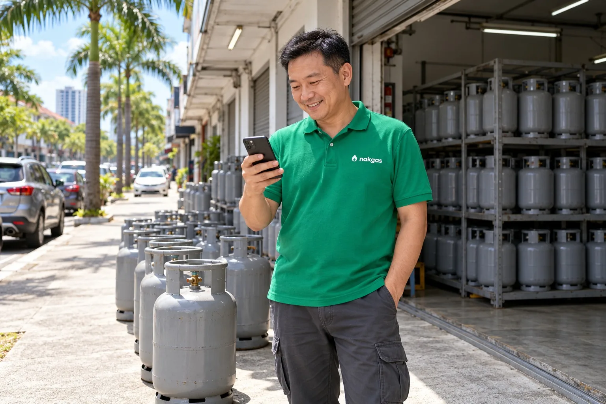

Kenapa NakGas wujudWhy NakGas exists
Gas memasak sudah ada harga yang adil dan pengedar yang dipercayai. Yang tiada ialah cara mudah untuk memesannya. NakGas ialah cara itu.
Cooking gas already has a fair price and dealers people trust. What it lacks is an easy way to order it. NakGas is that way.

Dua perkataan, satu jawapanTwo words, one answer
"Nak gas" ialah apa yang setiap rumah sebut bila tong kosong. "Nak" ialah perkataan paling harian untuk mahu. NakGas ialah jawapannya: sebut, dan gas sampai, tanpa panggilan.
"Nak gas", I want gas, is what every household says when the cylinder runs out. "Nak" is the most everyday Malay word for want. NakGas is the answer: say it, and the gas comes, without a phone call.
Kami mahu nama yang pendek, mudah diingat dan sangat Malaysia, seperti yang diminta oleh pengasas kami.
We wanted a name that is short, easy to remember and very Malaysian, as our founder asked.

Mak kita baca warna api. Kita tak semua boleh
Our mothers read the flame. Not all of us can
Api gas yang sihat berwarna biru. Ibu kita membaca api untuk tahu bila tong hampir kosong. NakGas membuat bacaan itu untuk anda: dahulu dengan peringatan dan pesanan dua ketik, kemudian dengan regulator pintar yang tahu baki gas sebelum api berubah.
A healthy gas flame burns blue. Our mothers read the flame to know when the cylinder was nearly empty. NakGas does that reading for you: first with a reminder and a two tap order, later with a smart regulator that knows the balance before the flame changes.

Dari Johor Bahru, untuk MalaysiaFrom Johor Bahru, for Malaysia
NakGas dibina oleh VIN Industries, diasaskan oleh Navin, yang pernah menguruskan operasi selatan Volvo Trucks. Dia tahu bagaimana barang bergerak di jalan raya, dan bagaimana pengedar bekerja.
NakGas is built by VIN Industries, founded by Navin, who used to run the southern operations of Volvo Trucks. He knows how goods move on the road, and how dealers work.
Kami bermula di Johor Bahru, pangkalan kami dan rakan pengedar kami. Sistemnya dibina untuk seluruh negara dari hari pertama.
We start in Johor Bahru, our base and where our dealer partners are. The system is built for the whole country from day one.

Lima perkataan untuk NakGasFive words for NakGas
Pengedar tempatan yang anda kenal, bukan orang asing.
Local dealers you know, not strangers.
Harga kawalan dahulu, setiap baris ditunjukkan.
The controlled price first, every line shown.
Pesanan tidak terbiar. Yang terdekat seterusnya sentiasa menunggu.
No order is left waiting. The next nearest is always there.
Dua ketik untuk pesan, 45 saat untuk diterima.
Two taps to order, 45 seconds to be accepted.
BM dan English, dibina untuk dapur dan jalan kita.
BM and English, built for our kitchens and roads.
Apa yang akan datangWhat comes next
Pesan, terima dalam 45 saat, jejak, bukti gambar, dompet pengedar. Johor Bahru dahulu.
Order, accept in 45 seconds, track, photo proof, the dealer wallet. Johor Bahru first.
Baki gas dan pesanan semula ramalan. Peranti dan soalan keselamatan sedang dibincangkan.
Gas balance and predictive reorder. The device and the safety questions are being worked through.
Pelanggan komersial dan tong C50, peta langsung, Cina dan Tamil.
Commercial customers and C50 cylinders, a live map, Chinese and Tamil.
Bersama kami di jalanJoin us on the road
Pengedar berlesen di Johor Bahru boleh mendaftar sekarang.
Licensed dealers in Johor Bahru can sign up now.